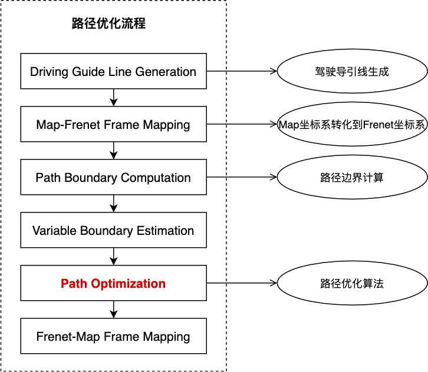
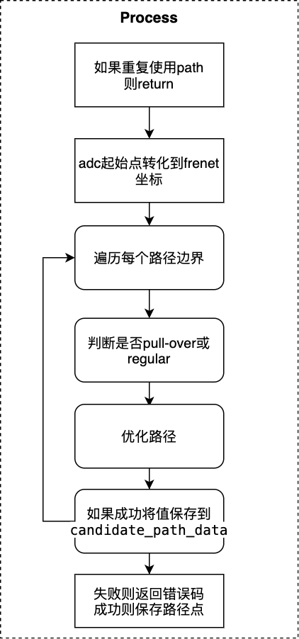
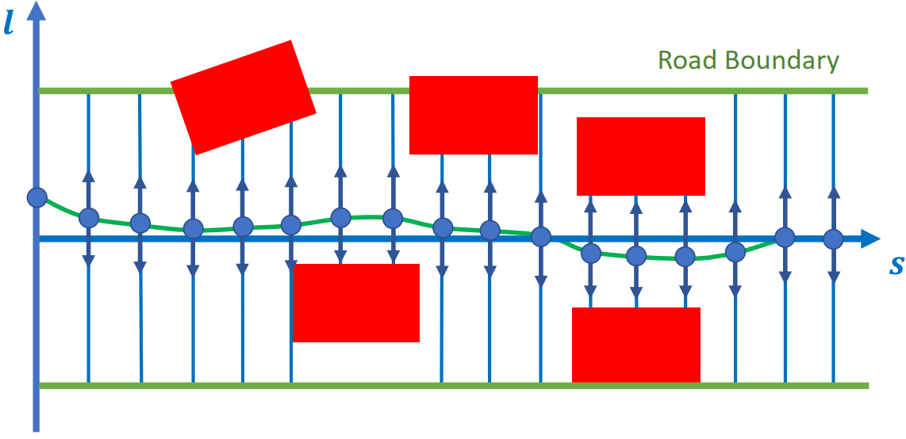
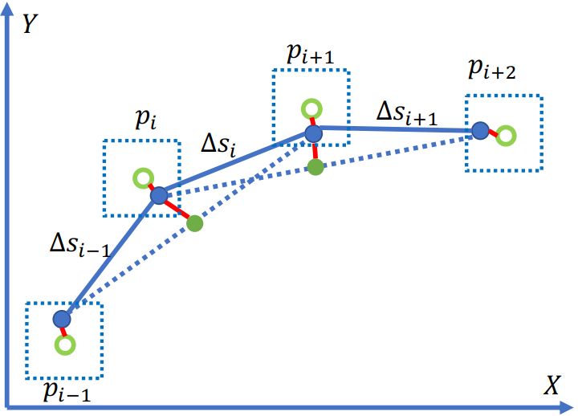

分段加加速度路径优化
Tip: 为了更好的展示本文档中的等式，我们建议使用者使用带有插件的Chrome浏览器，或者将Latex等式拷贝到在线编辑公式网站进行浏览。
概览
分段加加速度路径优化是规划模块的任务，属于task中的optimizer类别。
规划模块的运动总体流程图如下：

总体流程图以lane follow场景为例子进行说明。task的主要功能位于Process函数中。
Fig.1的具体运行过程可以参考path_bounds_decider。
分段加加速度路径优化的流程如下图：

相关代码及对应版本
本节说明分段加加速度路径优化代码和算法。
请参考代码Apollo r6.0.0 piecewise_jerk_path_optimization
输入
PiecewiseJerkPathOptimizer::Process( const SpeedData& speed_data, const ReferenceLine& reference_line, const common::TrajectoryPoint& init_point, const bool path_reusable, PathData* const final_path_data)
其中包括参考线，起始点等。
输出
OptimizePath函数得到最优的路径，信息包括\(opt\_l, opt\_dl, opt\_ddl\)。在Process函数中最终结果保存到了task基类的变量reference_line_info_中。
代码流程及框架
分段加加速度路径优化代码的流程图如下。

如果重复使用path则return
common::Status PiecewiseJerkPathOptimizer::Process(
const SpeedData& speed_data, const ReferenceLine& reference_line,
const common::TrajectoryPoint& init_point, const bool path_reusable,
PathData* const final_path_data) {
// 跳过piecewise_jerk_path_optimizer 如果路径重复使用
if (FLAGS_enable_skip_path_tasks && path_reusable) {
return Status::OK();
}
... ...
adc起始点转化到frenet坐标
... ...
const auto init_frenet_state =
reference_line.ToFrenetFrame(planning_start_point);
// 为lane-change选择lane_change_path_config
// 否则, 选择default_path_config
const auto& config = reference_line_info_->IsChangeLanePath()
? config_.piecewise_jerk_path_optimizer_config()
.lane_change_path_config()
: config_.piecewise_jerk_path_optimizer_config()
.default_path_config();
... ...
遍历每个路径边界
... ...
const auto& path_boundaries =
reference_line_info_->GetCandidatePathBoundaries();
ADEBUG << "There are " << path_boundaries.size() << " path boundaries.";
const auto& reference_path_data = reference_line_info_->path_data();
std::vector<PathData> candidate_path_data;
// 遍历每个路径
for (const auto& path_boundary : path_boundaries) {
size_t path_boundary_size = path_boundary.boundary().size();
... ...
判断是否pull-over或regular ① 判断是否是pull-over
... ...
if (!FLAGS_enable_force_pull_over_open_space_parking_test) {
// pull over场景
const auto& pull_over_status =
injector_->planning_context()->planning_status().pull_over();
if (pull_over_status.has_position() &&
pull_over_status.position().has_x() &&
pull_over_status.position().has_y() &&
path_boundary.label().find("pullover") != std::string::npos) {
common::SLPoint pull_over_sl;
reference_line.XYToSL(pull_over_status.position(), &pull_over_sl);
end_state[0] = pull_over_sl.l();
}
}
... ...
② 判断是否是regular
... ...
if (path_boundary.label().find("regular") != std::string::npos &&
reference_path_data.is_valid_path_reference()) {
ADEBUG << "path label is: " << path_boundary.label();
// 当参考路径就位
for (size_t i = 0; i < path_reference_size; ++i) {
common::SLPoint path_reference_sl;
reference_line.XYToSL(
common::util::PointFactory::ToPointENU(
reference_path_data.path_reference().at(i).x(),
reference_path_data.path_reference().at(i).y()),
&path_reference_sl);
path_reference_l[i] = path_reference_sl.l();
}
end_state[0] = path_reference_l.back();
path_data.set_is_optimized_towards_trajectory_reference(true);
is_valid_path_reference = true;
}
... ...
优化路径
... ...
// 设置参数
const auto& veh_param =
common::VehicleConfigHelper::GetConfig().vehicle_param();
const double lat_acc_bound =
std::tan(veh_param.max_steer_angle() / veh_param.steer_ratio()) /
veh_param.wheel_base();
std::vector<std::pair<double, double>> ddl_bounds;
for (size_t i = 0; i < path_boundary_size; ++i) {
double s = static_cast<double>(i) * path_boundary.delta_s() +
path_boundary.start_s();
double kappa = reference_line.GetNearestReferencePoint(s).kappa();
ddl_bounds.emplace_back(-lat_acc_bound - kappa, lat_acc_bound - kappa);
}
// 优化算法
bool res_opt = OptimizePath(
init_frenet_state.second, end_state, std::move(path_reference_l),
path_reference_size, path_boundary.delta_s(), is_valid_path_reference,
path_boundary.boundary(), ddl_bounds, w, max_iter, &opt_l, &opt_dl,
&opt_ddl);
... ...
优化过程： 1).定义piecewise_jerk_problem变量，优化算法 2).设置变量 a.权重 b.D方向距离、速度加速度边界 c.最大转角速度 d.jerk bound 3).优化算法 4).获取结果
如果成功将值保存到candidate_path_data
... ...
if (res_opt) {
for (size_t i = 0; i < path_boundary_size; i += 4) {
ADEBUG << "for s[" << static_cast<double>(i) * path_boundary.delta_s()
<< "], l = " << opt_l[i] << ", dl = " << opt_dl[i];
}
auto frenet_frame_path =
ToPiecewiseJerkPath(opt_l, opt_dl, opt_ddl, path_boundary.delta_s(),
path_boundary.start_s());
path_data.SetReferenceLine(&reference_line);
path_data.SetFrenetPath(std::move(frenet_frame_path));
if (FLAGS_use_front_axe_center_in_path_planning) {
auto discretized_path = DiscretizedPath(
ConvertPathPointRefFromFrontAxeToRearAxe(path_data));
path_data.SetDiscretizedPath(discretized_path);
}
path_data.set_path_label(path_boundary.label());
path_data.set_blocking_obstacle_id(path_boundary.blocking_obstacle_id());
candidate_path_data.push_back(std::move(path_data));
}
... ...
失败则返回错误码，成功则保存路径点
... ...
if (candidate_path_data.empty()) {
return Status(ErrorCode::PLANNING_ERROR,
"Path Optimizer failed to generate path");
}
reference_line_info_->SetCandidatePathData(std::move(candidate_path_data));
return Status::OK();
... ...
相关算法解析
分段加加速度路径优化算法详细介绍在论文Optimal Vehicle Path Planning Using Quadratic Optimization for Baidu Apollo Open Platform
中。

路径优化算法：
根据导引线和障碍物生成路径边界
将导引线在s方向等间隔采样
对每个s方向的离散点迭代的优化 \(𝑙, 𝑙^{'}, 𝑙^{''}\) 。
建立数学模型
（1）轨迹平滑

subject to: $\( P_k \in B, for: k = 0,...,n-1 \\ ||2P_k - P_{k-1} - P_{k+1}||_2 < \frac{d_{ref}^2}{R_{min}} \\ for: k=1,...,n-2 \)$
其中
\(P_k\)是\((x_k, y_k)\)
\(P_{k\_ref}\)是路由线的原始点
\(B\)是\(P_k\)在\(P_{k\_ref}\)的边界
\(\frac{d_{ref}^2}{R_{min}}\)是最大曲率约束
（2）优化目标
（3）约束条件
连续性约束
安全性约束
\(l\)方向的点需要在边界内。
曲率约束
自车的转角不能超过最大转角。
优化方法采用OSQP方法。